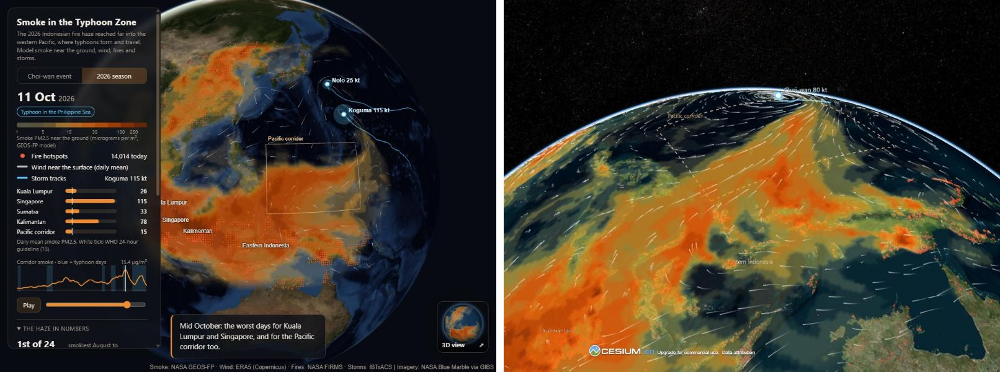

The question
Almost every dry season, fires on peatland and farmland in Sumatra and Kalimantan send haze over Indonesia, Malaysia and Singapore. 2026 was a strong El Niño year, and the fires were widespread, in eastern Indonesia as well as in the west. On 3 October the global wind and air quality map earth.nullschool.net showed something less familiar: a long trail of haze drawn north-east from eastern Indonesia into Super Typhoon Choi-wan, far out over the Philippine Sea.
The point of this project is the scale of the haze, not a claim that smoke changes typhoons. I wanted to know whether the trail was really smoke, how often typhoons pull smoke out over the Pacific, whether 2026 was unusual, whether the storms also change the haze in the west, and how many people breathed it. The answer comes in two parts: the direct export of smoke from eastern Indonesia into the Pacific, and the indirect effect of the storms on the haze in the west.
The data
| What | Source | Period |
|---|---|---|
| Smoke and other aerosols near the ground and in the air column, every 3 hours (0.25 degree) and daily (0.5 degree) | NASA GEOS-FP forecast system, through the NCCS OPeNDAP server | 28 Sep to 7 Oct; 1 Aug to 25 Oct 2026 |
| The same, daily, for every season since 2003 | NASA MERRA-2 reanalysis (2,166 days, through NASA's cloud OPeNDAP) | Aug to Oct, 2003 to 2026 |
| A second model for the event | Copernicus CAMS (ECMWF) | 28 Sep to 7 Oct 2026 |
| Winds near the surface and at 850 and 700 hPa | ERA5 (Copernicus Climate Data Store) | Aug to Oct 2026 |
| Fire hotspots | NASA FIRMS, VIIRS satellites | Aug to Oct 2026 |
| Typhoon tracks and winds | IBTrACS, western Pacific | 2003 to 2026 |
| People per square kilometre | WorldPop 2020, 1 km | 2020 |
| Ground monitors | Singapore NEA (data.gov.sg); OpenAQ (Kuala Lumpur, Jakarta, Palembang) | Aug to Oct 2026 |
| El Niño and Indian Ocean Dipole indices | NOAA (ONI and DMI) | 2003 to 2026 |
"Smoke" here means the organic, brown and black carbon in the models, not total PM2.5. Around a typhoon most fine particles are sea salt, and a total PM2.5 map, like the nullschool picture, mixes the two. A typhoon day is a day with a storm of at least 64 knots in the Philippine Sea box (120 to 150 E, 5 to 25 N), and the Pacific corridor is the open ocean between eastern Indonesia and that box (128 to 150 E, 3 to 18 N).
Two globes, thirteen notebooks
| Page | What it shows |
|---|---|
| Map globe (MapLibre and deck.gl) | Smoke, wind, fires and storm tracks, with a switch between the Choi-wan event (3-hourly) and the whole 2026 season (daily), smoke levels in Kuala Lumpur, Singapore, Sumatra, Kalimantan and the corridor, and a small chart with typhoon days. Works on phones. |
| 3D globe (CesiumJS) | The same on aerial imagery, with camera views along the smoke streamer, following the storm, and over Kuala Lumpur and Singapore. Desktop only. |
| Notebooks (Python) | 00 to 04 the Choi-wan event (maps, air trajectories, smoke budgets); 05 to 08 the 2026 season (typhoon days, people exposed, ground check); 09 to 11 the record since 2003; 12 the files for the globes. |

What the data shows
2026 put more smoke in the typhoon zone than any season since 2003
In the MERRA-2 record, 2026 is the smokiest August and September in both the Pacific corridor and eastern Indonesia (3.81 µg/m³, against 2.72 in 2015). It is not the record in the west: Kalimantan ranks 3rd, Singapore 4th, Sumatra 5th and Kuala Lumpur 6th, behind 2006, 2015 and 2019. The difference is where the smoke was: in 2026 much more of it sat over eastern Indonesia, upwind of the corridor. The El Niño was the strongest in the period (ONI +2.16 for July to September, rising to +2.46 for August to October), and El Niño and the Indian Ocean Dipole together explain 34% to 55% of the year-to-year differences in smoke.
![Two charts. Left: bars of mean smoke near the ground in the Pacific corridor for August to September of every year from 2003 to 2026; most years are between 0.1 and 0.6, 2015 reaches 1.14, 2019 1.02, and 2026 stands out at 1.94. Right: the change in smoke flowing into the corridor from the south in the days around a typhoon entering the Philippine Sea, averaged over 103 cases; it rises from below normal five days before to a peak of 639 tonnes a day above normal on day 1, then falls well below normal on days 3 and 4](images/cs_smoke.png)
Typhoons pull smoke out of eastern Indonesia
Across all 24 seasons, smoke entering the corridor through its southern side rises by 158 tonnes a day on typhoon days (95% range 29 to 288), and by 430 tonnes a day in the seven El Niño seasons (244 to 613). The smoke in the corridor's air column rises by 28% and 70%. In other seasons the change is small and not clear. Lined up on the day each storm entered the Philippine Sea, the inflow peaks on the day of arrival and the day after, at about 640 tonnes a day above normal, and then drops well below normal as the storm moves on and the winds turn.
The streamer into Choi-wan was real smoke, and it came from the east
Split into its parts, the trail on the nullschool map is smoke; the bright ring round Choi-wan's eye is sea salt, about 95% of the fine particles near the storm. The edge of the smoke came within about 200 km of the storm's centre. Air parcels released at 850 hPa (about 1.5 km up) over each source region show where it came from: 47% of the parcels from eastern Indonesia reached the corridor and a few (2%) reached the storm itself, after about four and a half days, against 24% from Kalimantan and none from Sumatra. The western fires were simply too far "inside" the continent for the storm's winds to reach.
About half of it was removed on the way
A smoke budget for each box (what flows in, what flows out, and the change in what is there) shows eastern Indonesia exporting about 21,000 tonnes of smoke a day during the event, mostly northward, while Sumatra was a net importer. In the corridor, inflow minus outflow minus the change in storage leaves about half of the inflow unaccounted for: the part removed on the way, by rain and settling, plus any error in the budget.
Back home, the storms barely change the haze
The indirect effect is weak. On typhoon days the smoke field shifts north and north-east, a little less over Sumatra and southern Kalimantan and a little more over northern Borneo, the southern South China Sea and the corridor, but for Kuala Lumpur and Singapore the change is within the noise.
Tens of millions breathed it
Combining the daily smoke with where people live, the worst day put 17 to 45 million Indonesians, 3.7 to 19 million Malaysians and all of Singapore's 4.6 million in unhealthy levels of fire smoke. The range comes from four versions of the calculation: the model as it is, and the model scaled down by the factor found against Singapore's monitors (below), each for fire smoke and for total PM2.5.
| Worst day, unhealthy fire smoke | Scaled to monitors | Model as it is |
|---|---|---|
| Indonesia | 17.1 million | 45.0 million |
| Malaysia | 3.7 million | 18.6 million |
| Singapore | 4.6 million | 4.6 million |
Problems in the data, and how they were handled
- Sea salt that looks like haze. Near the storm, total PM2.5 is about 95% sea salt. Every finding about the storm uses smoke only (organic, brown and black carbon), and the maps show smoke, not total PM2.5.
- A model that reads high. Against Singapore's five official monitoring regions, GEOS-FP tracks the ups and downs well (correlation 0.83 to 0.85) but reads 1.45 to 2.35 times too high, 1.8 times on average. The exposure figures are therefore given as a range, with and without that correction.
- Few open monitors. Singapore is the only government with daily open data for the whole season. In Kuala Lumpur, Jakarta and Palembang only low-cost community sensors (AirGradient, through OpenAQ) were available: they agree with the model in Kuala Lumpur (correlation 0.66 to 0.83) but not in Jakarta, where city pollution dominates, or in Palembang, where the model reads too low near the fires.
- City pollution counted as smoke. Organic carbon also comes from traffic and industry, so Jakarta looked smoky on every day. For people's exposure, the project uses brown carbon, which in GEOS-FP comes only from fires.
- Two models, two levels. MERRA-2 shows 33% to 68% of GEOS-FP's smoke in 2026, while their daily ups and downs agree (correlation 0.71 to 0.94). Each series is compared only with itself: ranks come from MERRA-2, the event and season from GEOS-FP.
- A record still being written. MERRA-2 for October 2026 is not yet published, so the long record covers August and September only and does not include Choi-wan's peak. It will be added in late November.
Limits
All smoke figures come from models that combine satellite data with weather and fire emissions; they are not measurements, and over the open ocean there is nothing on the ground to check them. The link between typhoon days and smoke is an association across 24 seasons, with the season as the unit of uncertainty; it says nothing about whether the smoke changed the storms, and the project does not claim that. The air trajectories cannot resolve the storm's core. Exposure uses 2020 population and smoke near the ground only. The work has not been through peer review; the closest published study, on smoke reaching the Philippines with developing typhoons in 2019 (Reid and others, 2025), looks at single cases rather than the long record.
Where this could be useful
- Haze monitoring and public health: which places a season's smoke reaches, how many people it affects, and how much the models need correcting against the few open monitors.
- Regional forecasting: a typhoon in the Philippine Sea as an early signal that eastern Indonesian smoke will be carried over the ocean, and washed out on the way.
- Climate communication and teaching: a single, striking event checked against two decades of open data, with the uncertainty shown honestly.
About
Lik Ren Tai applies data science in two fields: environmental science and railway systems. This project was built with Python (xarray, pydap, pandas, rasterio, matplotlib), MapLibre GL JS, deck.gl and CesiumJS.
Smoke: NASA GMAO GEOS-FP and MERRA-2; Copernicus Atmosphere Monitoring Service. Winds: ERA5, Copernicus Climate Change Service. Fires: NASA FIRMS (VIIRS). Storms: IBTrACS (NOAA NCEI). Population: WorldPop. Monitors: Singapore NEA (data.gov.sg); OpenAQ and AirGradient. Indices: NOAA. Related work: Reid and others 2025, Atmospheric Chemistry and Physics 25, 18639. Imagery: NASA GIBS; Bing Maps via Cesium ion. Inspired by earth.nullschool.net. This is an independent project, not affiliated with or endorsed by any of the sources.